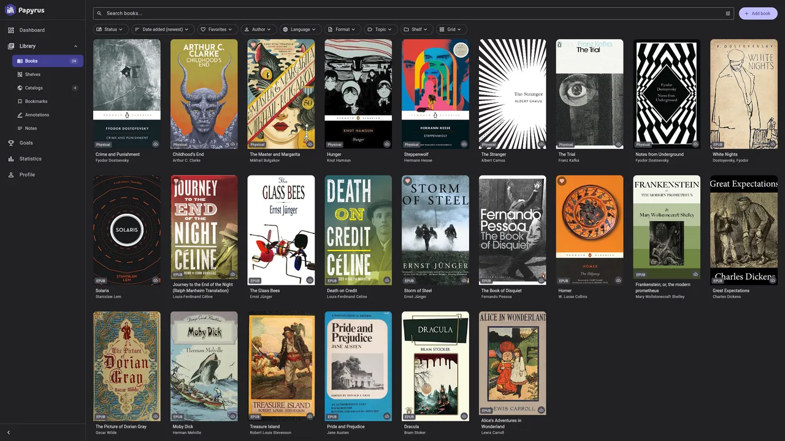

Library
Organize physical and digital books with shelves, tags, series, filters, and saved searches. Import files or OPDS books, fetch metadata and covers, edit details, and export your library.
A free, open-source e-book reader and library manager. No subscriptions. No tracking. No lock-in.

Organize physical and digital books with shelves, tags, series, filters, and saved searches. Import files or OPDS books, fetch metadata and covers, edit details, and export your library.
Customize fonts, spacing, colors, and layouts, save reading profiles, and switch to e-ink mode. Bookmark pages, highlight passages, and keep searchable notes you can export.
Track reading time, pages, and completed books, with goals and statistics for physical and digital reading. Sync your library, notes, and reading positions across devices, including changes made offline.
Read e-books, documents, and comics in EPUB, PDF, AZW3, MOBI, TXT, FB2, CBR/CBZ, CBT/CB7, ODT, and DJVU. Your books retain their original format when you export them.
Keep books on your device, use a Papyrus server, or connect Google Drive, OneDrive, Dropbox, WebDAV, or S3. Use the hosted service or run your own server.
Use Papyrus in your browser or install the Windows or Linux app. Desktop downloads, release notes, and installation details are available on GitHub.
Papyrus is published under the AGPL-3.0 license. The source code and development discussions are on GitHub. Contributions and bug reports are welcome.